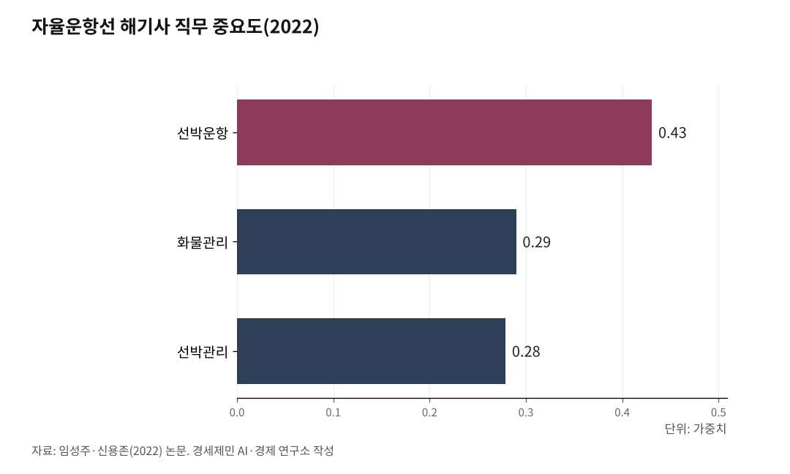
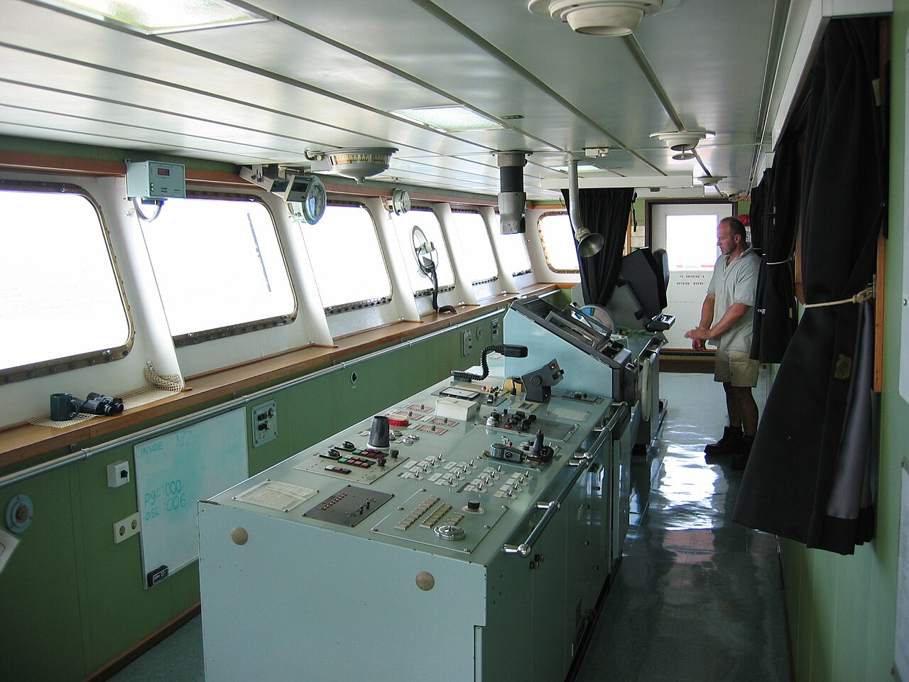

[해양 AI 융복합⑤] 자율운항선박, 배보다 먼저 온 국제 규범
국제해사기구 첫 기준 7월 1일 발효, 강제 규정은 2032년 1월 1일이 목표
한국은 법 먼저 만들고 울산 앞바다를 첫 운항해역으로, 2035년 완전자율 운항이 목표
AI경세제민=김갑봉 기자 | 자율운항선박을 다루는 국제 규칙이 올해 처음 생겼다. 사람이 타지 않고 다니는 배는 아직 흔하지 않은데 규칙이 먼저 나왔다. 그 규칙이 강제 규정으로 바뀌는 해와 한국이 기술 개발을 끝내겠다고 잡은 해가 둘 다 2032년이다. 그 대목을 짚는다.
국제 규범이 처음 생겼다
국제해사기구는 2026년 5월 22일 자율운항선박 국제기준을 채택했다. 영국 런던에서 5월 13일부터 열흘 동안 이어진 제111차 해사안전위원회 자리다. 해양수산부 해사안전정책과가 같은 날 이를 알렸다.
자율운항선박은 선원이 타지 않거나 적게 타고도 움직이는 배로, 영어 머리글자를 따 매스라고 부른다.
이번 기준은 3개 편과 24개 장으로 짜였다. 1편에는 목적·적용 범위·용어 정의가 들어가고, 2편은 설계·검사·유지보수를 다루는 관리체계다. 3편은 항해 안전·화물 운송·정박 같은 성능 요건이다.
요건은 설계와 승인과 운항에 걸쳐 있다. 항해와 통신 연결, 원격 운항, 화재 안전, 수색과 구조가 그 영역이다. 위험 평가와 사이버 보안, 육상 원격운항센터를 엮는 방법도 들어갔다.
이 기준은 지키지 않아도 제재를 받지 않는 권고 기준이다. 나라마다 기술 수준이 다르고 시범 운항이 더 필요해 이렇게 마련했다고 해양수산부는 밝혔다.

강제 규정은 2032년에 온다
이 권고 기준은 2026년 7월 1일부터 효력이 생겼다.
적용 대상은 해상인명안전협약이 다루는 화물선이고 여객선은 빠졌다. 회원국이 먼저 써 보게 하면서 강제 규정으로 가는 길을 닦는다고 국제해사기구는 밝혔다.
다음은 각국이 배를 띄워 보며 경험을 쌓는 단계다.
올해 12월 제112차 해사안전위원회에서 그 얼개를 짤 작업반을 다시 꾸린다. 강제 기준을 만드는 작업은 2028년에 시작한다. 2030년 7월 1일까지 채택해 2032년 1월 1일 발효하는 것이 목표다. 해상인명안전협약에 자율운항 장을 새로 넣는 방안도 검토한다.
배에 사람이 없어도 책임은 사라지지 않는다. 국제해사기구는 선장이 배에 타지 않더라도 언제나 그 배 전체를 책임진다고 못박았다.
한국은 법을 먼저 만들었다
한국에는 이 배를 다루는 법이 이미 있다.
자율운항선박 개발과 상용화를 돕는 법률이 2025년 1월 3일 시행됐다. 2023년 12월 국회를 넘어 2024년 1월 공포됐고, 1년 뒤 효력이 생겼다. 당시 산업통상자원부와 해양수산부가 함께 맡은 법이다.
법에 따라 정책위원회가 꾸려졌다. 위원은 두 부처 장관과 정부위원 다섯, 민간 전문가 여섯을 더해 열셋이다. 첫 회의는 2025년 4월 29일 부산에서 열렸다.
핵심은 운항해역이다. 지정 해역에서 안전성 평가를 거쳐 운항 승인을 받은 배는 선박안전법과 선박직원법 규제 일부를 면제받는다. 배에 몇 명이 타야 하는지 정한 승무정원 규제가 여기 들어간다. 해역은 시·도지사가 신청한다. 정책위원회 심의와 의결을 거쳐 해양수산부 장관이 지정하고 고시한다.
첫 해역은 울산 앞바다다. 해양수산부는 2025년 12월 초 울산항 일대 499㎢를 자율운항선박 운항해역으로 지정·고시했다. 지정 기간은 2년이다.
첫 운항 승인도 나왔다. 선박해양플랜트연구소의 시험선 해양누리호가 이 법에 따른 국내 첫 운항 승인을 받았다. 승인 기간은 2026년 6월 29일부터 2027년 11월 30일까지다.

데이터를 모아야 배가 배운다
해양수산부는 2026년 5월 7일 산업통상부와 함께 자율운항선박 AI 데이터플랫폼 사업 출범식을 열었다. 충돌 회피·항로 최적화·고장 예측을 익히려면 실제 운항 기록이 필요하다.
AI는 사람이 쌓은 운항 자료로 배운다.
해운사와 조선사 등 25개 기업과 기관이 자료를 나누겠다는 의향서에 서명했다. 8개 분야에서 100여 종을 모은다. 자율운항시스템과 항해·조종, 엔진·기관 등이 그 분야다.
사업 기간은 2026년부터 2029년까지 4년이다. 국비 300억원을 포함해 346억원이 들어간다.
형식이 제각각이면 한데 모아도 쓰지 못하므로 표준 형식부터 정한다. 중소 조선사도 쓸 수 있게 만든다고 정부는 밝혔다.
정부는 이 플랫폼을 AI 완전자율운항선박 기술개발 사업과 잇는다. 2032년까지 이어지는 그 사업은 2026년 7월 시작됐다.
두 부처는 2026년 10월 12일 제1차 자율운항선박 기본계획을 내놨다. 2035년까지 사람 없이 스스로 판단해 다니는 완전자율운항선박을 띄우고 수주 세계 1위에 오른다는 목표다.
논문은 선원 일이 바뀐다고 했다
임성주 한국해양수산연수원 과장과 신용존 한국해양대 해양경영경제학부 교수는 2022년 한국항해항만학회지에 해기사 직능을 다룬 논문을 실었다. 요인을 둘씩 견주어 중요도를 매겼다.
해기사가 타는 자율운항선박에서는 선박운항이 0.431로 가장 높았다. 화물관리 0.290, 선박관리 0.279가 뒤를 이었다.
완전자율운항선박은 평가 대상부터 다르다. 연구진은 육상 원격운항관리자 직무의 중요도를 따졌다. 비상상황 대처가 0.417로 가장 높았고 원격운항제어 0.159, 선박정비·관리 0.128이 뒤따랐다.
연구진은 세계해사대학이 2019년 보고서 트랜스포트 2040에서 내놓은 전망도 인용했다. 고도로 자동화된 배가 들어오면 2040년 세계 선원 수요가 지금 기술을 전제한 전망보다 22% 적다는 내용이다. 다만 보고서는 바닷길 물동량이 늘어 선원 수 자체는 지금보다 많을 것으로 봤다.
배는 규범을 기다리지 않고 이미 나가 있다.
HD현대 계열사 아비커스는 2026년 1월 15일 HMM 선박 40척에 선원이 탄 채 쓰는 자율운항 솔루션을 공급하기로 계약했다. 강제 규정의 발효 목표인 2032년 1월까지는 5년 남짓 남았다.
참고문헌
가. 공식 발표자료와 공공기록
· International Maritime Organization, "IMO adopts first global Code for autonomous ships", 2026.5.22., https://www.imo.org/en/mediacentre/pressbriefings/pages/imo-adopts-mass-code.aspx
· 해양수산부 해사안전국 해사안전정책과, 「자율운항선박, 국제 표준화 첫걸음 떼다」, 2026.5.22., https://eiec.kdi.re.kr/policy/materialView.do?num=281536
· 산업통상부 조선해양플랜트과, 「자율운항선박 시대, "데이터로 연다"」, 2026.5.7., https://eiec.kdi.re.kr/policy/materialView.do?num=280705
· 산업통상부 제조산업정책관 조선해양플랜트과, 「K-조선 모두의 힘으로, M.AX 상생항로 나선다」, 2026.10.12., https://eiec.kdi.re.kr/policy/materialView.do?num=287966
· 해양수산부 스마트해운물류팀, 「자율운항선박 정책위원회 본격 시동」, 2025.4.29., https://www.mof.go.kr/doc/ko/selectDoc.do?docSeq=61469&menuSeq=971&bbsSeq=10
· 해양수산부 스마트해운물류팀, 「자율운항선박 기술개발 촉진 및 상용화 등을 위한 법·제도적 근거 마련」, 2023.12.8., https://www.mof.go.kr/doc/ko/selectDoc.do?docSeq=54272&menuSeq=971&bbsSeq=10
· 「자율운항선박 개발 및 상용화 촉진에 관한 법률」(법률 제19909호, 시행 2025.1.3.), 국가법령정보센터, https://www.law.go.kr/lsInfoP.do?lsiSeq=257803
· 선박해양플랜트연구소, 「국내 첫 운항 승인 획득한 KRISO '해양누리호', 운항 승인 후 첫 시범운항 실시」, 2026.7.9., https://www.newswire.co.kr/newsRead.php?no=1038209
나. 연구보고서와 논문
· 임성주·신용존, 「자율운항선박 도입에 따른 해기사 직능 변화와 인력양성에 관한 연구」, 『한국항해항만학회지』 제46권 제1호, 한국항해항만학회, 2022.2., 1~10쪽, https://doi.org/10.5394/KINPR.2022.46.1.1
· 임창현, 「완전무인 자율운항선박 핵심기술 개발해 조선·해운 산업 경쟁력 강화」, 『나라경제』 2026년 8월호, 한국개발연구원 경제교육·정보센터, 2026.8., https://eiec.kdi.re.kr/publish/naraView.do?fcode=00002000040000100001&cidx=15662
다. 언론 보도
· 김선국, "부산서 자율운항선박 규제특례 설명회…하반기 운항해역 지정계획 공개", 헤럴드경제, 2026.7.28., https://biz.heraldcorp.com/article/10822245
· 서병곤, "정부, 자율운항선박 데이터 표준화 추진⋯346억 투입", 이투데이, 2026.5.7., https://www.etoday.co.kr/news/view/2582341
· 이혜미, "HD현대 아비커스, HMM 선대에 '하이나스' 자율운항 솔루션 공급", 이비엔뉴스센터, 2026.1.16., https://www.ebn.co.kr/news/articleView.html?idxno=1695477
· 방종근, "울산 앞바다 대한민국 제1호 자율운항선박 성능 실증 무대 됐다", 국제신문, 2025.12.2., https://v.daum.net/v/U5VnWfB3ly
· 오상민, "울산 앞바다 자율운항선박 성능실증장 됐다", 경상일보, 2025.12.2., https://www.ksilbo.co.kr/news/articleView.html?idxno=1043166
· 구본혁, "韓 자율운항선박 '해양누리호'…첫 시범운항, 해역 실증 나섰다", 헤럴드경제, 2026.7.8., https://www.heraldk.com/article/2026070818391448878
· "ITF and WMU Release Automation 2040 Report", The Maritime Executive, 2019., https://maritime-executive.com/article/itf-and-wmu-release-automation-2040-report
마. 사진 출처
· [사진4] Haus, "Container-ship-bridge.JPG", 위키미디어 공용, 퍼블릭 도메인, https://commons.wikimedia.org/wiki/File:Container-ship-bridge.JPG
※ 이 기사는 인공지능을 활용해 작성했습니다.
관련기사
- [해양 AI 융복합④] 항만 첫 데이터센터 품는 인천 신항, 착공은 또 2027년 하반기 뒤로
- [해양 AI 융복합③] 부산항만공사, 국내 첫 'AI 항만' 전환 계획 내놨다
- [해양 AI 융복합⑥] AI 완전자율운항선박, 7년 4600억원 기술개발 첫발
- [해양 AI 융복합②] 광양항, 정부 '피지컬 AI 항만' 첫 실증 거점 됐다
저작권자 © AI경세제민 무단전재 및 재배포, AI학습 및 활용 금지